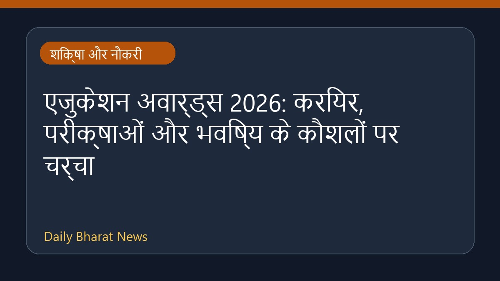

एजुकेशन अवार्ड्स 2026: करियर, परीक्षाओं और भविष्य के कौशलों पर चर्चा

द हंस इंडिया के अनुसार, एजुकेशन अवार्ड्स 2026 में करियर, परीक्षाओं, नेतृत्व और भविष्य के जरूरी कौशलों पर महत्वपूर्ण जानकारियां साझा की गईं। इस कार्यक्रम में शिक्षा क्षेत्र से जुड़े विभिन्न पहलुओं और भविष्य की आवश्यकताओं पर प्रकाश डाला गया। हालांकि, इस आयोजन और इसमें शामिल होने वाले वक्ताओं या विशेष सत्रों के बारे में विस्तृत विवरण अभी सीमित हैं, लेकिन यह मंच छात्रों और पेशेवरों के लिए शिक्षा के उभरते रुझानों को समझने का एक माध्यम बना।
मूल स्रोत: Education News Sources
Education Awards 2026: Insights on careers, exams, leadership, and future skills - The Hans India ↗
Education Awards 2026: Insights on careers, exams, leadership, and future skills - The Hans India ↗